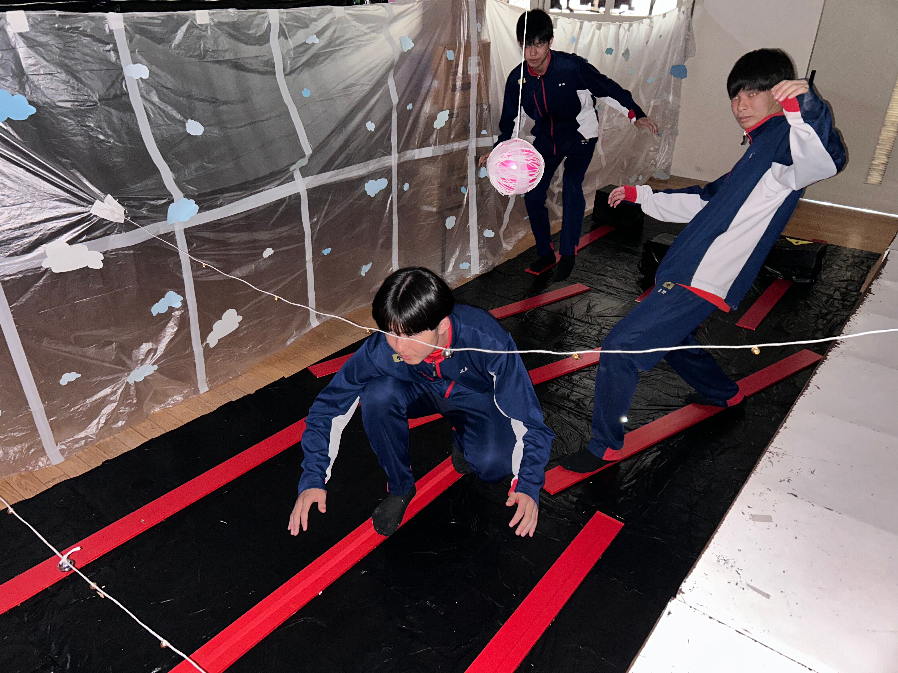
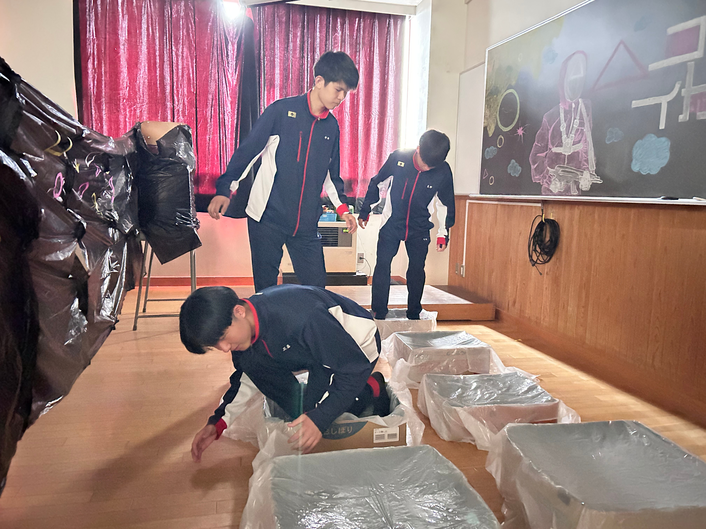

オカしなゲームに オワリはない
説明
あなた方はこのゲームの参加者となって、以下の３つのステージに挑戦していただきます。
各ステージにルールがあり、脱落した時点で先のステージに進むことが出来なくなってしまいます。
十分な緊張感を持ってご参加ください。
線上渡り
このステージでは様々な障害物を避け、鉄骨の上を渡り切ればクリアとなります。
さらに、ステージ奥に立つ「ダルマさん」に見られている間は動くことができません。
もし落ちてしまったり、ダルマさんの前で動いてしまったらその時点で脱落となってしまいます。
的当て

このステージでは銃を用いて３発のうち２発を的に命中させることができればクリアとなります。
もし誰も達成出来なかった場合、多く当てた人から次のステージへ進むことができます。
ガラス渡り
このステージでは二つの箱から片方を選び、当たりの箱を飛び移って最後までたどり着ければクリアとなります。
もし外れの箱を選んでしまったら、その時点で脱落となってしまいます。
最初にゴールした参加者がこのゲームの勝者です。奮ってご参加ください。